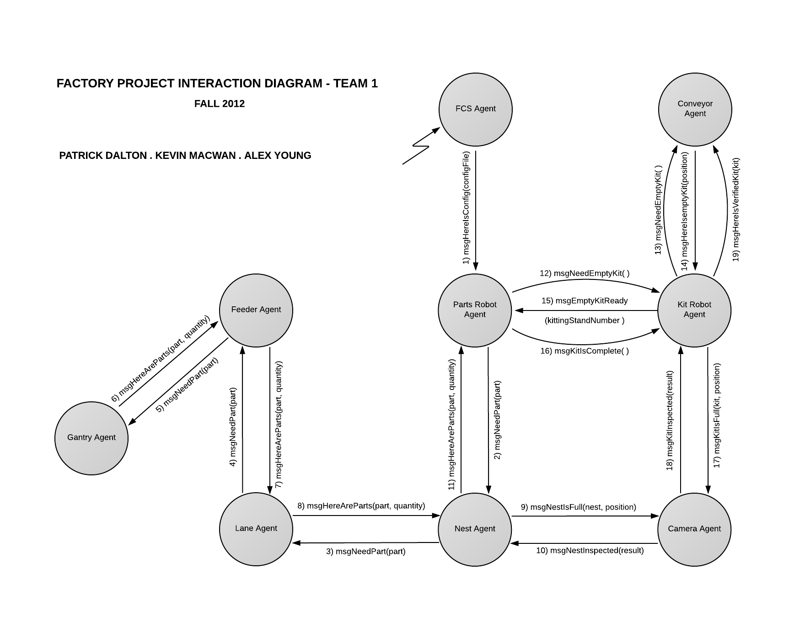

Purpose/Overview
Work in large teams to create software that simulates a factory using Swing components, animation, and a self-created API to facilitate interaction between CSCI 201 and CSCI 200 code.
Requirements
See http://www-scf.usc.edu/~csci201/factory/TheKittingCell.htm
Global Data/Functions
Global data is limited as much as possible. Generally only static final data is made globally available.
- Manager JPanel x,y size
- Robot velocity X, Y
- Server messages (String)
Classes
For information on specific classes, please view our Doxygen here.
CS201: source code for individual classes can be found here
High-Level Architecture
 CS201 Documentation is available in pdf format here.
CSCI 200 (Roy Zheng) Paint Order
- Background
- Core machinery (conveyers, robot bases, etc)
- Feeder, lane, kits
- KitRobot, KitterRobot
- Parts
- GantryRobot
Executor executor = Executors.newSingleThreadExecutor();
executor.execute(new Runnable(){
public void run(){
camera.setVisible(true);
try{ Thread.sleep(500); } // sleeps 0.5 second
catch( Exception e ){}
camera.setVisible(false);
}
});
One-time thread is easy since it runs once and terminates itself
Brings memory efficiencyProtocol (David Zhang)
Server messages are simple final Strings from class Message. The Server class will obtain messages from the various Manager clients. The Server then runs through a series of if-statements that check the messages and then execute the appropriate methods of Agents. Instances of each agent are stored in the Server class. See class Message for more. Each Manager client is a class that extends class Manager, and therefore has methods sendToServeR(String msg), listenToServer(), and a few others that are standard for communication.
User Interface
User interface is described in detail on the specific class page. Generally, all UI JPanels and such are in the factory.controlGUI package.
Graphics for the robots and such are also available for select classes such as GuiGantry, GuiPartsRobot, etc. They reside in the factory.agentGUI package.
Test Cases
David Zhang
Broad: Each GUI class has a Main class that runs its own frame
We can test each class independently
PartsManager and KitAssemblyManager interaction:
PartsManager creates a new part; sends data to Server; Kit Assembly Manager should be able to view new part
Server has TEST messages that can determine that clients are connected properly
Roy Zheng
GuiKitterRobot
- Proper movement along the rail
- Proper stopping flush with the ordered lane
- Proper rotation along the rail
- Parts go down the robot properly into the active kit
- Proper movement to each of the feeders
- Proper movement to disposal bin
- Proper display of extended/retracted arms
- Proper display of associated bin if any
- Bin should not be displayed if dropped
- Proper movement between the various kit stands
- Proper movement to the conveyer belt
- Proper display of associated kit if any
- Kit should not be displayed if dropped
Poojan Jhaveri
Kit Manager
- Being able to create a kit by adding a kit name,selecting parts from part list and then choosing parts needed in the current kit
- Being able to update existing kit by selecting kit name adn then making changes to the parts
- Being able to delete a kit by selecting kit name from the combobox and then clicking on deleting a kit.
Dongyoung Jung
Feeder
- Part box dumped by gantry robot and display on graphical panel
- Part box insertion to a proper lane
- Feeder status change by agent and display on manager’s GUI panel on/off switch, part low sensor, feed parts switch, part fed counter, lower/raise rear gate switch, purge bin switch, diverter left/right switch
- Part movement on lane
- Correct synchronized part movements between on lane manager’s monitor and on factory production manager’s monitor. This is achieved by setting up ‘Timer’ in server.
- Parts lineup when nest is full of parts
- Lane stops before a nest dump
- Lane status change by agent and display on manager’s GUI panel
- On/off switch, vibration amplitude setting
- Part transfer to gantry robot
- Part display when lane passes parts
- Nest up/down
- Nest status change by agent and display on manager’s GUI panel
- Up/down switch
- Capability of system recover after non-normative scenario
GantryRobotManager Test Cases
Yuting Liu
Non-Nomative condition
- handling situations when kit robot breaks
- handling situations when feeders are dumped
- handling situations when purge station
- handling situations when bins are broken
- Gantry Robot goes to bin and pick bins up and move to feeder
- Gantry Robot dump empty bins to purge station
KitAssemblyManager Test Cases
Deepa Borkar